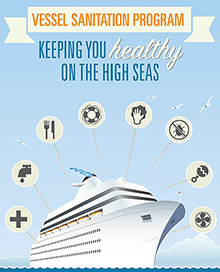

ShareCompartir
ShareCompartir
The Vessel Sanitation Program (VSP) at the Centers for Disease Control and Prevention (CDC) assists the cruise ship industry to prevent and control the introduction, transmission, and spread of gastrointestinal (GI) illnesses on cruise ships. VSP operates under the authority of the Public Health Service Act (42 U.S.C. Section 264 Quarantine and Inspection Regulations to Control Communicable Diseases).
VSP is part of the National Center for Environmental Health's Division of Emergency and Environmental Health Services. More about VSP »
What's New
2017 VSP Seminar Dates – Miami
October 2016 VSP Document Revision Meeting
Acute Gastroenteritis on Cruise Ships, 2008-2014
VSP 2011 Operations Manual [PDF - 4.88 MB]
Changes from 2005 Version (highlighted) [PDF - 4.89 MB]
Clarifications to the VSP 2011 Operations Manual [PDF - 521 KB]
VSP 2011 Construction Guidelines [PDF - 4.88 MB]
Changes from 2005 Version (highlighted) [PDF - 2.92 MB]
Clarifications to the VSP 2011 Construction Guidelines [PDF - 162 KB]
Construction Inspections – Letter to Cruise Industry [PDF - 631 KB]
Inspection Infographic
Infographic showing the eight specific areas inspectors evaluate on ships.
Prevention eCards
Send electronic greeting cards on hand washing and cruises.
Handwashing
Handwashing recommendations for the cruising public.
Cruise Ship Inspection
- Inspection Scores
Advanced and basic cruise ship inspection search - Green Sheet Report
A list of the most recent inspection scores - Ship Score of 100
Cruise ship inspections with score of 100 - Variances
List variances by section or cruise ship - About Inspections
Operational and construction inspections
Key Resources

Click here to learn about what VSP inspects on ships.
- Page last reviewed: November 30, 2015
- Page last updated: September 6, 2016
- Content source: